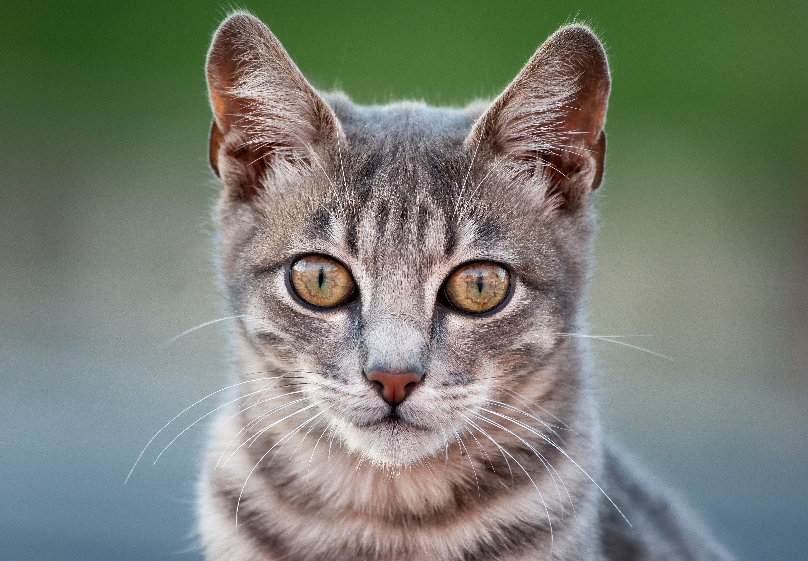
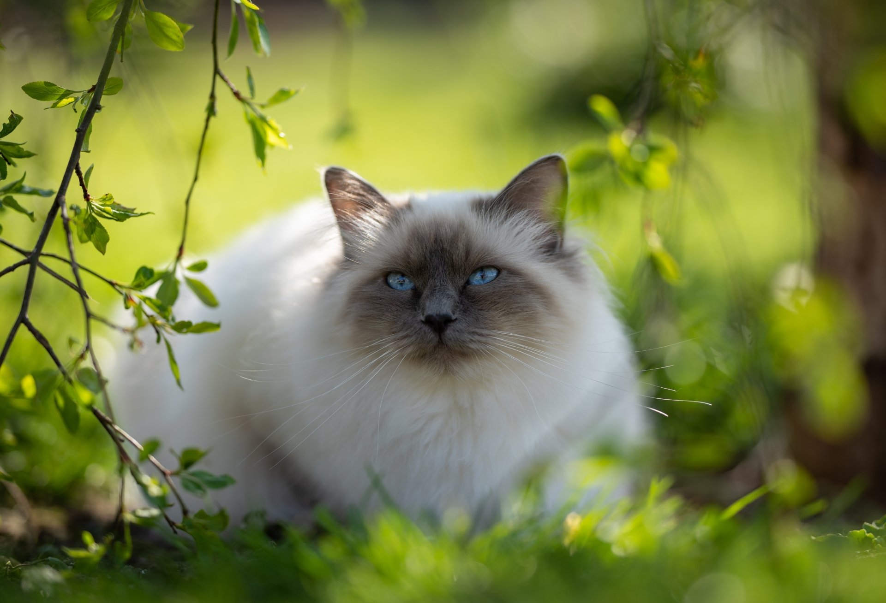
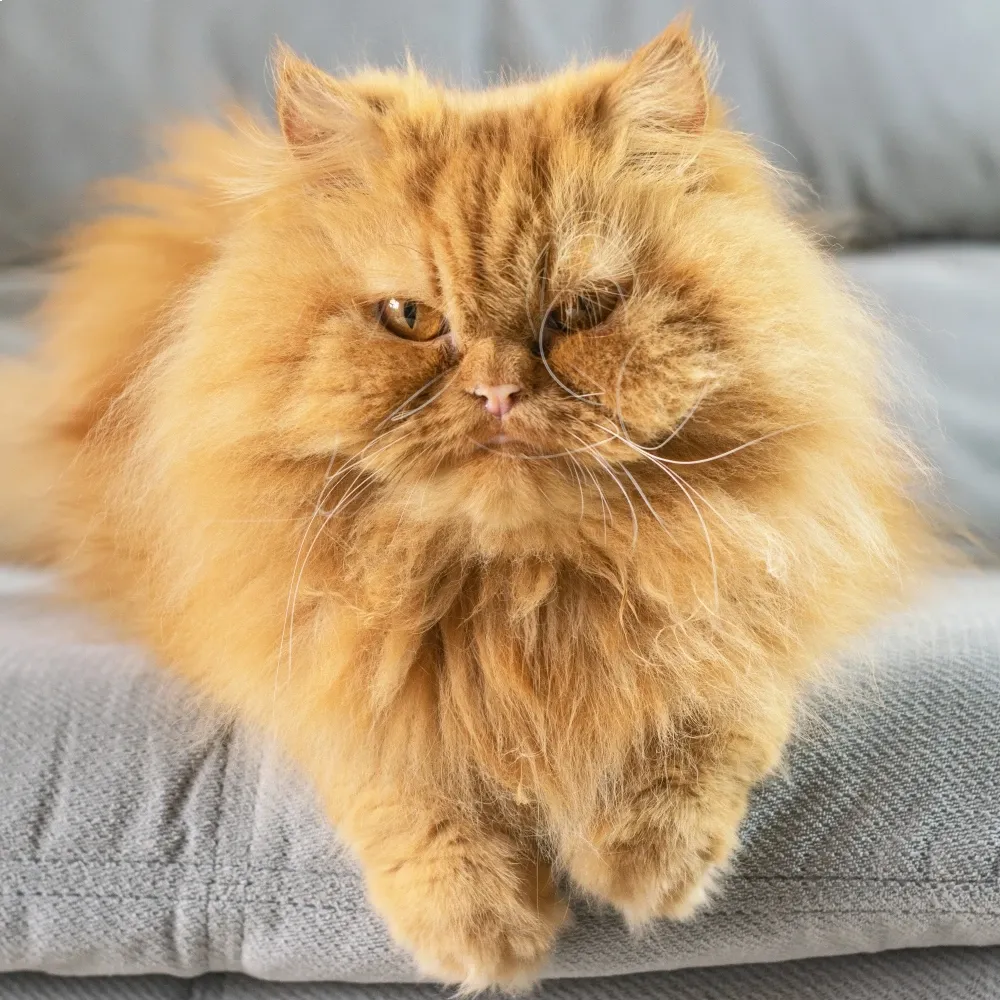
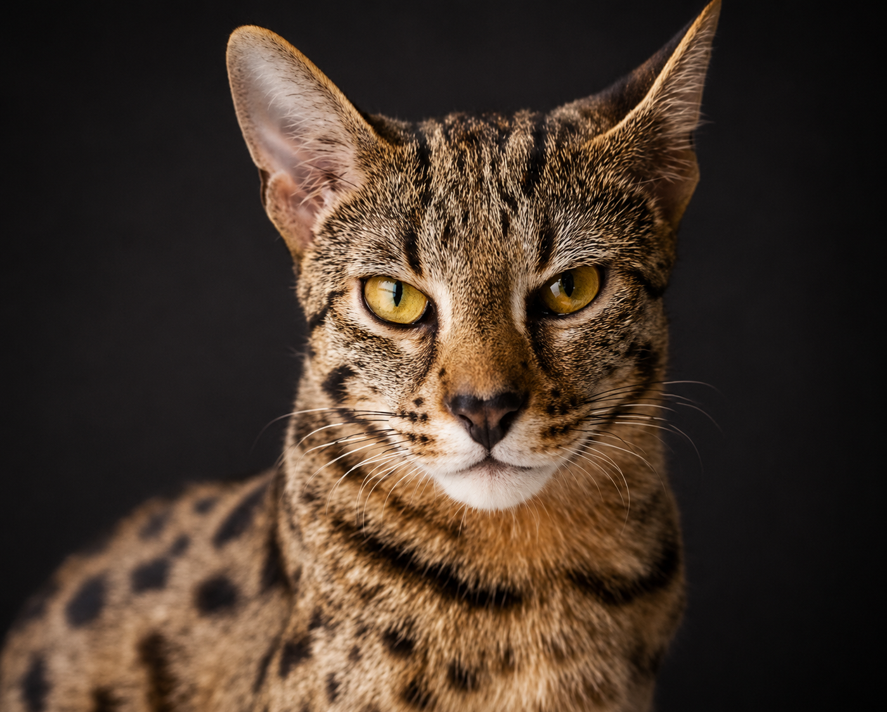

Seja bem-vindo ao CatHug. Um espaço minimalista dedicado a catalogar a história, os cuidados, os preços e as maiores curiosidades das raças de gatos mais fascinantes do mundo.

Únicos, surpreendentes e cheios de personalidade. Carregam a beleza de todas as misturas e um charme exclusivo que não se copia.

Famoso por relaxar totalmente o corpo ao ser pego no colo. Possui olhos azuis safira hipnotizantes e uma pelagem extremamente sedosa.

A união perfeita de quietude aristocrática e cores quentes. Um felino calmo, de face plana, que adora uma rotina tranquila e mimos reais.

O felino mais raro, caro e enigmático existente. Uma mescla espetacular de visual de leopardo selvagem com lealdade doméstica.